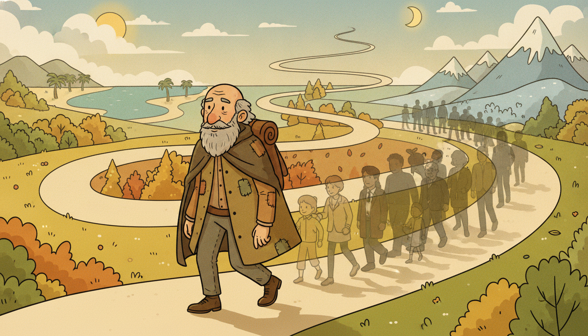

"You keep asking me what I am, and I keep showing you one life. I have lived a million others you will never see, and the cruel joke is that you must judge the whole family from the single child who happened to walk past your door."
A Stochastic Process Loyal Only to Its Ensemble
A time series is not a thing; it is one sample from a thing. The "thing" is a stochastic process, an entire family of possible histories, and the single record you collected is just one history drawn at random from that family. This reframing is the foundation on which all of classical forecasting rests, and it immediately raises a paradox: probability theory describes the process by averaging across the whole family (the ensemble), yet you almost never get to see the family. You get one path. Estimating a mean by averaging over many parallel universes is impossible when you live in only one. Ergodicity is the property that rescues us. When a process is ergodic, averaging along the single path you do have, over time, converges to the same answer you would have gotten by averaging across the unseen ensemble. Ergodicity is therefore the silent license behind every statistic you will ever compute from a single series: the sample mean, the sample autocovariance, the periodogram of Chapter 4, the fitted coefficients of an ARIMA model in Chapter 5. This section makes that license explicit, shows you exactly when it is granted and when it is revoked, and builds the white-noise atom from which the rest of Part II is assembled.
Part I treated a series as data to be cleaned, aligned, and split without leaking the future. Now we ask a deeper question that all of that engineering quietly assumed an answer to: what kind of mathematical object is a time series in the first place, and what gives us the right to estimate anything about it from a single finite record? The answer is the theory of stochastic processes, and its keystone is ergodicity. The thread of this section is a single uncomfortable fact and its resolution: you observe one realization, the theory speaks of infinitely many, and ergodicity is the bridge that lets the one stand in for the many. Everything that follows in this chapter, stationarity in Section 3.2 and beyond, is a sharpening of the conditions under which that bridge holds.
1. A Time Series as One Realization of a Stochastic Process Beginner
Begin with the object itself. A stochastic process (or random process) is a collection of random variables indexed by time,
$$\{X_t : t \in \mathcal{T}\},$$where the index set $\mathcal{T}$ is the integers $\mathbb{Z}$ for discrete time or an interval of $\mathbb{R}$ for continuous time. Each $X_t$ is a random variable: a function from an underlying sample space $\Omega$ to the real line. The crucial move is to fix the sample point $\omega \in \Omega$ rather than the time $t$. Fixing $\omega$ and letting $t$ run produces a single deterministic function of time,
$$t \mapsto X_t(\omega),$$which is called a realization, a sample path, or a trajectory of the process. This is what you actually record. The daily closing price of an index, the hourly temperature at a weather station, a patient's heart-rate trace: each is one $X_t(\omega)$ for one fixed but unknown $\omega$, the particular draw the world handed you. The process is the family; your data is one member. Figure 3.1.1 makes the distinction visual: several realizations from the same process, with the ensemble averaging running vertically across paths and the time averaging running horizontally along one path.
To describe the process completely, specifying the distribution of each $X_t$ in isolation is not enough, because a time series is defined by how its values at different times relate. The full description is the collection of finite-dimensional joint distributions: for every finite set of times $t_1 < t_2 < \cdots < t_k$, the joint cumulative distribution function
$$F_{t_1,\dots,t_k}(x_1,\dots,x_k) = P\big(X_{t_1} \le x_1,\, X_{t_2} \le x_2,\, \dots,\, X_{t_k} \le x_k\big).$$The Kolmogorov extension theorem guarantees that a consistent family of such finite-dimensional distributions defines a genuine process. These joints encode all temporal dependence: the fact that today's temperature constrains tomorrow's lives entirely in $F_{t,t+1}$ not factoring into the product of its marginals. Forecasting, at the deepest level, is the act of reading the conditional distribution $P(X_{t+1} \mid X_t, X_{t-1}, \dots)$ off these joints. The trouble, which the rest of the section confronts, is that the joints are exactly what one realization cannot reveal on its own.
A process $X_t(\omega)$ has two arguments and you can freeze either one. Freeze the time $t$ and vary the outcome $\omega$: you get a random variable, and averaging over $\omega$ is the ensemble (probabilistic) average, an expectation. Freeze the outcome $\omega$ and vary the time $t$: you get one deterministic path, and averaging over $t$ is the time average. Classical probability is built on the first; real data only gives you the second. The entire tension of time-series inference, and the reason ergodicity is the hero of this section, is that these two averages are computed over different things and there is no a priori reason they should agree.
2. Mean, Autocovariance, and Autocorrelation Functions Beginner
The full joint distribution is usually intractable, so classical time-series analysis works with its first two moments, which for many processes carry most of the usable structure. The mean function records the ensemble average at each time,
$$\mu_t = E[X_t] = \int_{-\infty}^{\infty} x \, dF_t(x),$$a deterministic function of $t$ describing the level the process hovers around. The autocovariance function records how the process at two times co-varies,
$$\gamma(s,t) = \operatorname{Cov}(X_s, X_t) = E\big[(X_s - \mu_s)(X_t - \mu_t)\big],$$which is the heartbeat of temporal dependence: $\gamma(s,t)$ measures how much knowing $X_s$ tells you about $X_t$ in a linear sense. Its diagonal is the variance, $\gamma(t,t) = \operatorname{Var}(X_t) = \sigma_t^2$. Normalizing by the two standard deviations gives the autocorrelation function,
$$\rho(s,t) = \frac{\gamma(s,t)}{\sqrt{\gamma(s,s)\,\gamma(t,t)}} = \frac{\operatorname{Cov}(X_s,X_t)}{\sigma_s\,\sigma_t} \in [-1, 1],$$a scale-free version that is directly comparable across processes. The mean function captures where the process sits; the autocovariance and autocorrelation capture how its present is tethered to its past. When the dependence decays as $|s-t|$ grows, the process forgets its history; when it does not, the past keeps its grip indefinitely, and (as subsection 4 shows) estimation from one path becomes hopeless. These three functions, $\mu_t$, $\gamma(s,t)$, $\rho(s,t)$, are the objects every model in Part II ultimately tries to match. The unified notation table in Appendix A fixes these symbols for the whole book.
Consider the first-order autoregression $X_t = \phi X_{t-1} + \varepsilon_t$ with $|\phi| < 1$ and $\varepsilon_t$ independent of mean zero and variance $\sigma_\varepsilon^2$. Assume the process has settled into its stationary regime, so $\mu_t = 0$ and the variance is constant. Taking the variance of both sides and using independence of $\varepsilon_t$ from $X_{t-1}$,
$$\sigma_X^2 = \phi^2 \sigma_X^2 + \sigma_\varepsilon^2 \quad\Longrightarrow\quad \sigma_X^2 = \frac{\sigma_\varepsilon^2}{1 - \phi^2}.$$Multiplying $X_t = \phi X_{t-1} + \varepsilon_t$ by $X_{t-k}$ and taking expectations gives the recursion $\gamma(k) = \phi\,\gamma(k-1)$ for lag $k \ge 1$, which unrolls to the closed form
$$\gamma(k) = \phi^{|k|}\,\sigma_X^2 = \phi^{|k|}\,\frac{\sigma_\varepsilon^2}{1-\phi^2}, \qquad \rho(k) = \phi^{|k|}.$$Plug in $\phi = 0.7$ and $\sigma_\varepsilon^2 = 1$. Then $\sigma_X^2 = 1/(1 - 0.49) = 1.961$. The autocorrelation decays geometrically: $\rho(0) = 1$, $\rho(1) = 0.7$, $\rho(2) = 0.49$, $\rho(3) = 0.343$, $\rho(5) = 0.168$. By lag 10 it is $0.7^{10} = 0.028$, effectively negligible. This geometric decay is exactly the "forgetting" that, in subsection 4, will make the AR(1) ergodic and therefore estimable from a single long path.
3. The Fundamental Problem of Inference From One Realization Intermediate
Here is the difficulty in its sharpest form. The mean function is an ensemble average, $\mu_t = E[X_t]$, defined by averaging $X_t(\omega)$ over all outcomes $\omega$ at the fixed time $t$. The honest estimator of $\mu_t$ would collect many independent realizations of the process, read off their value at time $t$, and average them: the vertical average down Figure 3.1.1. In a controlled experiment you can sometimes do this, by running a simulation a thousand times, or by measuring a thousand identical sensors. But for the index price, the climate record, the single patient, there is exactly one history. You have one $\omega$, observed at many times. You cannot average down the ensemble because the ensemble has a population of one.
What you can compute instead is the time average along your single path,
$$\bar{X}_T = \frac{1}{T} \sum_{t=1}^{T} X_t(\omega),$$the horizontal average across Figure 3.1.1. Nothing in the definitions forces this to equal $\mu_t$. Consider a process with a time-varying mean, $\mu_t = \alpha + \beta t$ (a deterministic trend): the time average over a window estimates some blend of the levels in that window, not the ensemble mean at any single $t$, which is not even a single number. Even when the ensemble mean is constant, $\mu_t \equiv \mu$, it is not automatic that $\bar X_T \to \mu$; that convergence is a property a process may or may not possess. The fundamental problem of time-series inference is therefore this: we are forced to use time averages, but the quantities we care about are ensemble averages, and the equality of the two is a privilege, not a guarantee.
The word "ergodic" comes from statistical physics, coined in the 1880s from the Greek roots for "work" and "path". Boltzmann needed to justify replacing the average over all possible molecular configurations of a gas (the ensemble, which no experiment can sample) with the average a single gas measured over a long time (the time average, which a thermometer actually reports). His "ergodic hypothesis" was precisely the claim that the two coincide. A century later a quantitative analyst staring at one price history faces the identical question Boltzmann did: may I trust the long-run behavior of my one sample to reveal the law of the whole ensemble? The physics and the finance are different; the leap of faith is the same one.
4. Ergodicity: When Time Averages Estimate Ensemble Averages Advanced
Ergodicity is the property that licenses the leap. We state the practically important case, ergodicity for the mean. A stationary process with constant mean $\mu$ is mean-ergodic if its time average converges to the ensemble mean,
$$\bar{X}_T = \frac{1}{T}\sum_{t=1}^{T} X_t \;\xrightarrow{\;\text{m.s.}\;}\; \mu \quad \text{as } T \to \infty,$$where the arrow denotes mean-square convergence, $E\big[(\bar X_T - \mu)^2\big] \to 0$. The condition that delivers this is remarkably clean. The variance of the time average expands into a double sum of autocovariances,
$$\operatorname{Var}(\bar X_T) = \frac{1}{T^2}\sum_{s=1}^{T}\sum_{t=1}^{T}\gamma(s,t) = \frac{1}{T}\sum_{k=-(T-1)}^{T-1}\Big(1 - \tfrac{|k|}{T}\Big)\gamma(k),$$using stationarity so that $\gamma(s,t)$ depends only on the lag $k = s - t$. A sufficient condition for this to vanish is that the autocovariances are summable, $\sum_{k=-\infty}^{\infty} |\gamma(k)| < \infty$, or more weakly that $\gamma(k) \to 0$ as $k \to \infty$ (Cesaro averaging then drives the bound to zero). The intuition is the heart of the matter: if dependence decays, distant parts of the single path behave like nearly independent fresh samples, so a long path is secretly a large effective sample, and the law of large numbers reasserts itself along time instead of across the ensemble. A process that forgets its past at any rate is, for the purpose of estimating its mean, ergodic. This is exactly why the AR(1) of subsection 2, whose autocorrelations $\rho(k) = \phi^{|k|}$ decay geometrically and are trivially summable, is mean-ergodic: one long path suffices.

Figure 3.1.2 captures the bargain in one panel: the lone traveler is your single record, and the crowd quietly overlaid on him is the ensemble his long path stands in for.
Ergodicity for the mean is bought entirely with decaying dependence. The more general notion, "mixing", says that widely separated chunks of the path are asymptotically independent: $P(A \cap T^{-n}B) \to P(A)P(B)$ as the separation $n$ grows. A mixing process cannot get permanently stuck in any subregion of its outcome space, so one trajectory, given enough time, samples the whole ensemble. Forgetting the past is not a nuisance to be modeled away; it is the precise resource that makes a single time series statistically usable. A process that never forgets is a process you can never learn from one sample.
The converse case is instructive and it is where many real failures of inference hide. Consider a deliberately non-ergodic construction: draw a single random level $A \sim \mathcal{N}(0, \tau^2)$ once at $t = 0$, then set $X_t = A$ for all $t$ (a flat line at a random height), or more gently $X_t = A + \varepsilon_t$ with small noise. The ensemble mean is $E[X_t] = E[A] = 0$: average across many parallel universes and the random levels cancel. But the time average along any one path is $\bar X_T \approx A$, the particular level that universe happened to draw, which is not zero and does not converge to zero no matter how long you watch. Here $\gamma(k) = \tau^2$ for all lags: the dependence never decays, the path never forgets its founding accident, and the time average is forever loyal to its own realization rather than to the ensemble. No amount of data fixes this, because the single number you most want, $E[X_t]$, is simply not encoded in any one path. This is the conceptual key of the section: the validity of estimating from one series is not a property of your estimator or your sample size; it is a property of the process, and ergodicity is its name.
For the mean-ergodic AR(1) with $\phi = 0.7$ and $\sigma_X^2 = 1.961$, plug the geometric autocovariances into the variance formula. Summing the lag-window series gives, for large $T$, the long-run variance $\operatorname{Var}(\bar X_T) \approx \frac{\sigma_X^2}{T}\cdot\frac{1+\phi}{1-\phi} = \frac{1.961}{T}\cdot\frac{1.7}{0.3} = \frac{11.11}{T}$. The factor $(1+\phi)/(1-\phi) = 5.67$ is the price of autocorrelation: a path of $T$ correlated points carries only as much information about the mean as roughly $T/5.67$ independent points. So estimating $\mu$ to a standard error of $0.1$ needs about $T \approx 1100$ observations, not the $T \approx 196$ an i.i.d. sample of variance $1.961$ would require. Now contrast the non-ergodic level model: $\operatorname{Var}(\bar X_T) \to \tau^2 \neq 0$ as $T \to \infty$. The error floor never drops. One process pays a finite tax on its sample size; the other can never buy convergence at any price.
5. Gaussian Processes and White Noise, the Building Block Intermediate
Two special processes dominate classical practice. A process is Gaussian if every finite-dimensional joint distribution $F_{t_1,\dots,t_k}$ is multivariate normal. This is an enormous simplification, because a multivariate normal is fully determined by its mean vector and covariance matrix. For a Gaussian process the mean function $\mu_t$ and the autocovariance $\gamma(s,t)$ are not merely summary statistics: they are the entire process. There is nothing left to specify. This is the deep reason the second-order theory of subsection 2 is "often enough": for Gaussian processes, second-order structure is the whole story, and a great deal of real temporal data is close enough to Gaussian (or can be transformed toward it) that matching the mean and autocovariance matches the process. It also means that for Gaussian processes, weak stationarity (constant mean and lag-only covariance, the subject of Section 3.2) upgrades automatically to strict stationarity, and decaying covariance delivers ergodicity directly.
The simplest non-trivial process, and the atom from which the rest of Part II is built, is white noise. A sequence $\{\varepsilon_t\}$ is white noise with variance $\sigma^2$ if it has zero mean, constant variance, and zero autocovariance at every nonzero lag,
$$E[\varepsilon_t] = 0, \qquad \gamma(k) = \operatorname{Cov}(\varepsilon_t, \varepsilon_{t+k}) = \begin{cases} \sigma^2, & k = 0,\\ 0, & k \neq 0. \end{cases}$$Each value is uncorrelated with every other; the process has no memory at all. If in addition the values are independent and identically distributed we call it strong or i.i.d. white noise, and if they are also Gaussian it is Gaussian white noise, the purest, most forgetful, and most ergodic process there is. White noise is "white" because, as Chapter 4 shows in the frequency domain, its power is spread equally across all frequencies, like white light. Its role is structural rather than descriptive: real series are rarely white, but almost every classical model expresses a structured series as white noise passed through a filter. The random walk of Section 3.2 is the running sum of white noise, $X_t = X_{t-1} + \varepsilon_t$. The autoregressive and moving-average models of Chapter 5 are white noise shaped by feeding it back through its own past or averaging its recent values. White noise is what is left when a model has explained everything explainable; the residual diagnostics of every fitted model ask precisely whether the leftovers are white.
The ensemble-versus-realization tension introduced here is not a one-section curiosity; it is a current that runs the length of the book. Classical estimation leans on ergodicity to let one path stand for the ensemble. Modern deep forecasting inverts the trade: a temporal foundation model such as the ones in Chapter 15 is pretrained across millions of different series, effectively reconstructing an ensemble by gathering many realizations of many processes, then transferring that ensemble knowledge to your single path zero-shot. Probabilistic forecasting in Chapter 19 goes further and predicts the conditional distribution itself rather than a point, restoring the full $F_{t_1,\dots,t_k}$ that this section warned one realization could not reveal. Whenever a later chapter trains across many sequences, remember it is buying back, with data and compute, the ensemble that ergodicity let the classical statistician borrow from time.
6. Worked Study: Ensemble Versus Time Averages, and Estimating Autocovariance Advanced
Theory becomes conviction when you watch the two averages agree, and then watch them diverge. Code 3.1.1 simulates an AR(1) process many times, estimates its mean two ways, by averaging across the ensemble of simulations at a fixed time, and by averaging one long path over time, and confirms that under ergodicity both recover the true mean. The same code then builds the non-ergodic random-level process and shows the time average refusing to converge, the formal failure of subsection 4 made concrete.
import numpy as np
rng = np.random.default_rng(0)
def simulate_ar1(phi, c, sigma, T, burn=500, rng=rng):
"""One realization of X_t = c + phi*X_{t-1} + eps_t, started from its stationary mean."""
x = c / (1 - phi) # stationary mean as the starting level
out = np.empty(T)
for _ in range(burn): # discard transient so we sample the stationary regime
x = c + phi * x + sigma * rng.standard_normal()
for t in range(T):
x = c + phi * x + sigma * rng.standard_normal()
out[t] = x
return out
phi, c, sigma = 0.7, 1.5, 1.0
mu_true = c / (1 - phi) # = 5.0, the ensemble mean E[X_t]
# (A) ENSEMBLE average: 5000 independent paths, read the value at a fixed time t0.
N, T = 5000, 400
paths = np.array([simulate_ar1(phi, c, sigma, T) for _ in range(N)])
t0 = 200
ensemble_mean = paths[:, t0].mean() # average DOWN the ensemble at time t0
# (B) TIME average: one very long path, average along time.
long_path = simulate_ar1(phi, c, sigma, 200_000)
time_mean = long_path.mean() # average ALONG one realization
print(f"true ensemble mean mu : {mu_true:.4f}")
print(f"(A) ensemble avg at t0=200 : {ensemble_mean:.4f}")
print(f"(B) time avg of one path : {time_mean:.4f}")
# (C) NON-ERGODIC counterexample: X_t = A (+ tiny noise), A drawn once per path.
A = rng.standard_normal(N) # one random level per path, E[A]=0
nonerg = A[:, None] + 0.01 * rng.standard_normal((N, T))
print(f"\nnon-ergodic ensemble mean : {nonerg[:, t0].mean():.4f} (~0, levels cancel)")
print(f"non-ergodic time avg, path0: {nonerg[0].mean():.4f} (stuck at its own A)")
print(f"non-ergodic time avg, path1: {nonerg[1].mean():.4f} (a different stuck level)")
true ensemble mean mu : 5.0000
(A) ensemble avg at t0=200 : 4.9979
(B) time avg of one path : 5.0013
non-ergodic ensemble mean : -0.0094 (~0, levels cancel)
non-ergodic time avg, path0: 0.1258 (stuck at its own A)
non-ergodic time avg, path1: -1.3318 (a different stuck level)
With the mean settled, we turn to the autocovariance, the second-order object of subsection 2. The standard estimator of $\gamma(k)$ from a single length-$T$ path divides by $T$ (not $T-k$) for the same ergodicity reason that justified the mean estimator, which also keeps the resulting covariance matrix positive semidefinite,
$$\hat{\gamma}(k) = \frac{1}{T}\sum_{t=1}^{T-|k|} (X_t - \bar X_T)(X_{t+|k|} - \bar X_T).$$Code 3.1.2 implements this estimator from scratch so the mechanics are explicit, then reproduces it with NumPy and statsmodels in a fraction of the lines. The pair is the point: writing the estimator by hand teaches what the library call computes, and the library call is what you ship.
import numpy as np
def autocov_scratch(x, max_lag):
"""Biased (divide-by-T) sample autocovariance, computed lag by lag from one path."""
x = np.asarray(x, dtype=float)
T = len(x)
xbar = x.mean()
d = x - xbar
gamma = np.empty(max_lag + 1)
for k in range(max_lag + 1):
gamma[k] = np.sum(d[:T - k] * d[k:]) / T # divide by T, not T-k: PSD and ergodic-consistent
return gamma
x = simulate_ar1(0.7, 1.5, 1.0, 5000) # one ergodic AR(1) path
g = autocov_scratch(x, max_lag=5)
rho = g / g[0] # autocorrelation = normalized autocovariance
print("scratch acf:", np.round(rho, 3))
print("theory acf:", np.round([0.7 ** k for k in range(6)], 3))
import numpy as np
from statsmodels.tsa.stattools import acovf, acf
# NumPy one-liner via FFT-free correlate (manual, for comparison):
g_np = np.correlate(x - x.mean(), x - x.mean(), mode="full")[len(x) - 1:] / len(x)
# statsmodels does the whole job, biased estimator, in a single call each:
g_sm = acovf(x, nlag=5, fft=True) # autocovariance
rho_sm = acf(x, nlags=5, fft=True) # autocorrelation
print("numpy acf:", np.round(g_np[:6] / g_np[0], 3))
print("statsmd acf:", np.round(rho_sm, 3))
statsmodels.tsa.stattools.acovf and acf reproduce Code 3.1.2's roughly dozen-line loop in a single call each, matching its numbers to three decimals.scratch acf: [1. 0.703 0.49 0.34 0.235 0.166]
theory acf: [1. 0.7 0.49 0.343 0.24 0.168]
numpy acf: [1. 0.703 0.49 0.34 0.235 0.166]
statsmd acf: [1. 0.703 0.49 0.34 0.235 0.166]
The hand-written estimator in Code 3.1.2 spans roughly a dozen lines: a mean subtraction, an explicit loop over lags, the divide-by-$T$ convention, and the normalization to an autocorrelation. statsmodels.tsa.stattools.acf(x, nlags=5, fft=True) collapses all of it into a single call, and it does more than save typing. The library uses an FFT-based convolution that computes all lags in $O(T\log T)$ rather than the $O(T \cdot \text{max\_lag})$ of the naive loop, handles the bias convention and demeaning correctly, and (with alpha=0.05) returns Bartlett confidence bands for free. Internally it also guards the positive-semidefiniteness that the divide-by-$T$ choice protects, the subtle property a from-scratch divide-by-$T-k$ version would quietly break. Write the loop once to understand $\hat\gamma(k)$; ship acf because it is faster, tested, and correct on the edge cases you would otherwise rediscover the hard way.
The ensemble-versus-realization question has resurfaced at the center of modern temporal AI. Temporal foundation models, Amazon's Chronos (Ansari et al., 2024), Google's TimesFM (Das et al., 2024), Salesforce's Moirai (Woo et al., 2024), and Morgan Stanley's Lag-Llama (Rasul et al., 2024), are trained zero-shot across enormous corpora of distinct series, which is in effect an empirical reconstruction of an ensemble: they learn the distribution of processes rather than leaning on the ergodicity of any single one. A 2024 to 2026 line of work asks how much these models silently assume stationarity and ergodicity of the target series at inference, and how they degrade on regime-switching or non-ergodic targets where the single test path cannot reveal its own ensemble. In parallel, the econophysics community (building on Ole Peters' non-ergodic economics program) argues that many financial and growth processes are multiplicatively non-ergodic, so time-average growth and ensemble-average growth genuinely differ, and decisions optimized for the ensemble mean can ruin the individual who lives one path. The shared 2024 to 2026 message echoes this section's thesis: as data and compute let us approximate ensembles, the open problem is recognizing when a target process forbids that approximation, and detecting non-ergodicity before a confident forecast is wrong in a way no amount of past data could have caught.
For each process, state (i) whether the ensemble mean is constant in $t$, (ii) whether the time average of a single long path converges to that ensemble mean, and (iii) the property of the autocovariance that decides (ii). (a) i.i.d. Gaussian white noise. (b) the AR(1) $X_t = 0.95 X_{t-1} + \varepsilon_t$. (c) the random-level process $X_t = A$ with $A \sim \mathcal{N}(0,1)$ drawn once. (d) a linear trend plus noise, $X_t = 0.1\,t + \varepsilon_t$. For any process where the time average fails to recover the ensemble mean, name precisely which assumption of subsection 4 it violates.
Adapt Code 3.1.1 to estimate, for AR(1) processes with $\phi \in \{0, 0.5, 0.9, 0.99\}$, the empirical variance of the single-path time average $\bar X_T$ at $T = 2000$ (average over many simulated paths). Compare each to the theoretical $\frac{\sigma_X^2}{T}\cdot\frac{1+\phi}{1-\phi}$ from the second Numeric Example, and report the effective sample size $T_{\text{eff}} = T\cdot\frac{1-\phi}{1+\phi}$. Explain in two sentences why $\phi = 0.99$ makes a path of 2000 points worth only a handful of independent observations, and what that implies for fitting near-unit-root series (a foreshadowing of Section 3.2).
You are handed one series of 10,000 points and told only that it is "stationary". Design a diagnostic, using nothing but this single path, that gives evidence for or against mean-ergodicity. (Hint: split the path into non-overlapping blocks, compute each block's mean, and reason about how the dispersion of those block means should shrink with block length if and only if dependence decays.) Discuss why no single-path test can ever fully prove ergodicity, and connect this fundamental limit back to the Key Insight "Two Indices, Two Worlds" in subsection 1.